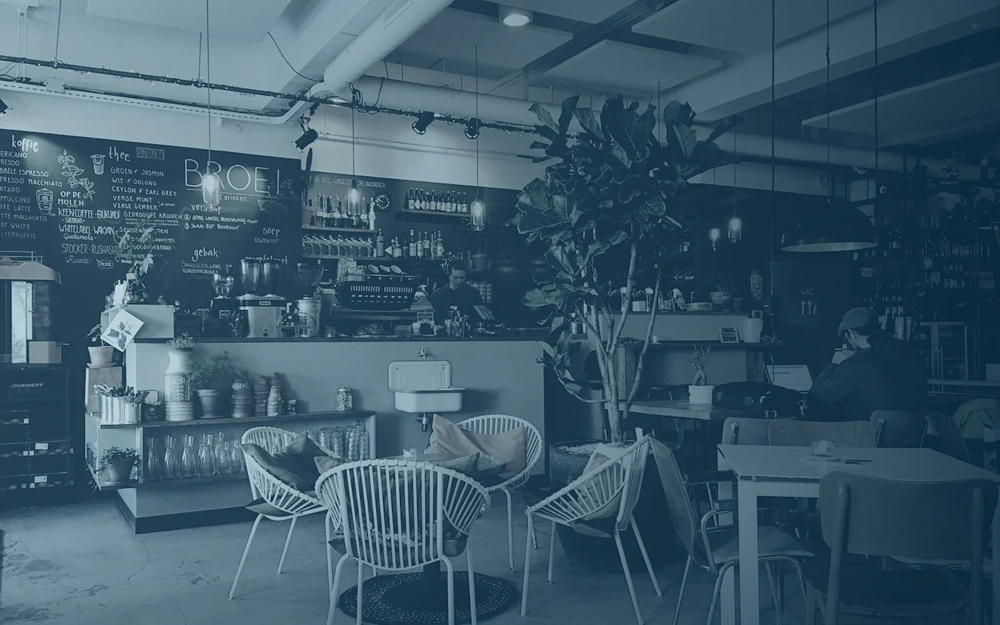
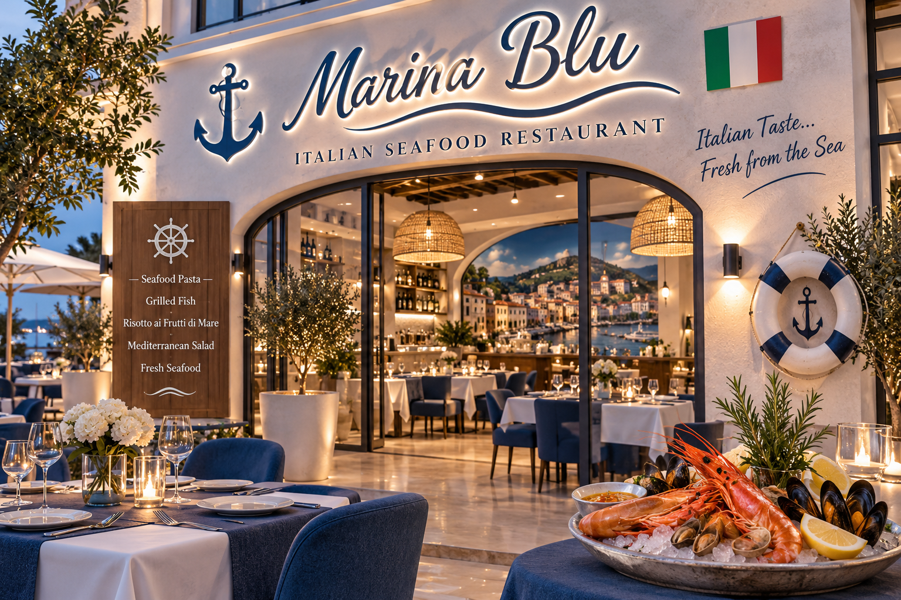

موقع ويب
موقع ويب
قهوة مختصة • متعدد الصفحات
محمصة سكون للقهوة
موقع ويب متكامل لمحمصة سكون يعرض أجود أنواع القهوة المختصة وتجارب التحضير. صُمم بواجهة هادئة وتنسيق متناسق يمنح الزائر تجربة تصفح مريحة.
زيارة المشروع
مطوّرة واجهات · شبكات وأمن سيبراني
أصمّم مساحات رقمية هادئة ومتقنة، حيث تلتقي دقة الشبكات بأناقة الواجهات.
طالبة متخصصة في الشبكات والأمن السيبراني وتقنية المعلومات، ومطوّرة واجهات أمامية (HTML, CSS, JS). أدمج بين دقة هندسة الشبكات وأناقة التصميم الهادئ لبناء مواقع وتجارب رقمية متناسقة.
متاحة لمشروع جديد
«أؤمن أن أفضل التصاميم هي التي تُشعَر قبل أن تُقرأ.»
نبذة عني
طالبة متخصصة في الشبكات والأمن السيبراني وتقنية المعلومات، ومطوّرة واجهات أمامية (HTML, CSS, JS). أدمج بين دقة هندسة الشبكات وأناقة التصميم الهادئ لبناء مواقع وتجارب رقمية متناسقة.
أهتم ببناء واجهات سريعة ومتجاوبة وسهلة الاستخدام، مع أساس تقني يحترم الأمان والتنظيم — من الفكرة الأولى حتى النشر.
أعمال مختارة
ثلاث تجارب رقمية بدأت من فكرة بسيطة، وانتهت بتفاصيل مدروسة وتجربة تصفح مريحة.
موقع ويب
قهوة مختصة • متعدد الصفحات
موقع ويب متكامل لمحمصة سكون يعرض أجود أنواع القهوة المختصة وتجارب التحضير. صُمم بواجهة هادئة وتنسيق متناسق يمنح الزائر تجربة تصفح مريحة.
زيارة المشروع هوية بصرية
هوية بصرية
ضيافة عربية · تصميم فاخر
تجربة رقمية راقية تحتفي بأصالة القهوة العربية وتقاليد الضيافة من خلال مطعم كوفي أثر، بتصميم بصري فاخر وتجربة رقمية متكاملة.
زيارة المشروع
منصة مطعمتجربة مطعم · قائمة الطعام
منصة رقمية متكاملة لمطعم بورتوفنو الإيطلي البحري، تجمع بين قوائم الطعام البحرية وإتقان تجربة الضيافة الإيطالية. تم تطويرها ونشرها بعناية فائقة لدمج الجمالية البصرية مع سهولة التنقل وحجز الطاولات.
زيارة المشروعهل لديك فكرة؟
أستقبل حاليًا مشروعين جديدين. شاركيني التفاصيل، وسأعود إليك خلال 24–48 ساعة.